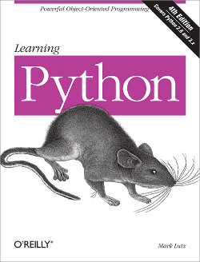

Python Books: Learning Python, Mark Lutz
The Blurb

Google and YouTube use Python because it's highly adaptable, easy to maintain, and allows for rapid
development. If you want to write high-quality, efficient code that's easily integrated with other
languages and tools, this hands-on book will help you be productive with Python quickly --
whether you're new to programming or just new to Python. It's an easy-to-follow self-paced tutorial,
based on author and Python expert Mark Lutz's popular training course.
Each chapter contains a stand-alone lesson on a key component of the language, and includes a unique
Test Your Knowledge section with practical exercises and quizzes, so you can practice new skills and
test your understanding as you go. You'll find lots of annotated examples and illustrations to help
you get started with Python 3.0.
- Learn about Python's major built-in object types, such as numbers, lists, and dictionaries
- Create and process objects using Python statements, and learn Python's general syntax model
- Structure and reuse code using functions, Python's basic procedural tool
- Learn about Python modules: packages of statements, functions, and other tools, organized into larger components
- Discover Python's object-oriented programming tool for structuring code
- Learn about the exception-handling model, and development tools for writing larger programs
- Explore advanced Python tools including decorators, descriptors, metaclasses, and Unicode processing
Details
Title: Learning Python, 4th EditionBy: Mark Lutz
Publisher: O'Reilly Media
Formats: Print, Ebook, Safari Books Online
Print: October 2009
Ebook: September 2009 Pages: 1216
Print ISBN: 978-0-596-15806-4
ISBN 10: 0-596-15806-8
Ebook ISBN: 978-0-596-80598-2
ISBN 10: 0-596-80598-5